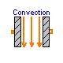
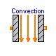

Thermal.Basic1D.Capacitance

This is a generic model for thermal capacitance of material. No specific geometry is assumped beyond a total volume. This model also assumes a single uniform temperature for the entire volume. It is also assumed that the density and specific heat capacity are indepedent of temperature.
| Name | Default | Description |
|---|---|---|
| cp | 1.0 | [J/(kg.K)] |
| rho | 1.0 | [kg/m3] |
| V | 1.0 | [m3] |
model Capacitance "Thermal capacitance" parameter Modelica.SIunits.SpecificHeatCapacity cp=1.0; parameter Modelica.SIunits.Density rho=1.0; parameter Modelica.SIunits.Volume V=1.0; Interfaces.Node_a n; equation V*cp*rho*der(n.T) = n.q; end Capacitance;
Thermal.Basic1D.Conduction

This is a model for linear heat conduction. The constitutive equation for heat conduction is: q = k*(a.T-b.T)/L; Both 'k' and 'L' are parameters. The thermal conductivity, k, is not a function of temperature in this model.
| Name | Default | Description |
|---|---|---|
| k | 1.0 | [W/(m.K)] |
| L | 1.0 | [m] |
| A | 1.0 | [m2] |
model Conduction "Linear heat conduction" extends Interfaces.Element1D; parameter Modelica.SIunits.ThermalConductivity k=1.0; parameter Modelica.SIunits.Length L=1.0; parameter Modelica.SIunits.Area A=1.0; equation q = A*k*dT/L; end Conduction;

This is model of linear heat convection. The basic constitutive equation for convection is: q = h*(a.T-b.T); It is assumed in this model that 'h' is a parameter and therefore not a function of temperature.
| Name | Default | Description |
|---|---|---|
| h | 1.0 | [W/(m2.K)] |
| A | 1.0 | [m2] |
model Convection "Linear heat convection" extends Interfaces.Element1D; parameter Modelica.SIunits.CoefficientOfHeatTransfer h=1.0; parameter Modelica.SIunits.Area A=1.0; equation q = A*h*dT; end Convection;

This simple radiation model uses the following constitutive equation: q = F*A*sigma*(a.T^4-b.T^4); where 'F' is a view factor (see "A Heat Transfer Textbook", Lienhard, 1987), 'A' is the area of the radiating surface and sigma is the Stefan-Boltzmann constant. It should be pointed out that 'F' should be chosen so that it corresponds to the surface for which the area, 'A', is being supplied. In other words, each surface will have its own unique value for F (based on geometry) and it is important the values of 'F' and 'A' be consistent with each other.
| Name | Default | Description |
|---|---|---|
| F | View factor | |
| A | 1.0 | [m2] |
model BlackBodyRadiation "Black body radiation" extends Interfaces.Element1D; parameter Real F "View factor"; parameter Modelica.SIunits.Area A=1.0; equation q = F*Modelica.Constants.sigma*A*(a.T^4 - b.T^4); end BlackBodyRadiation;